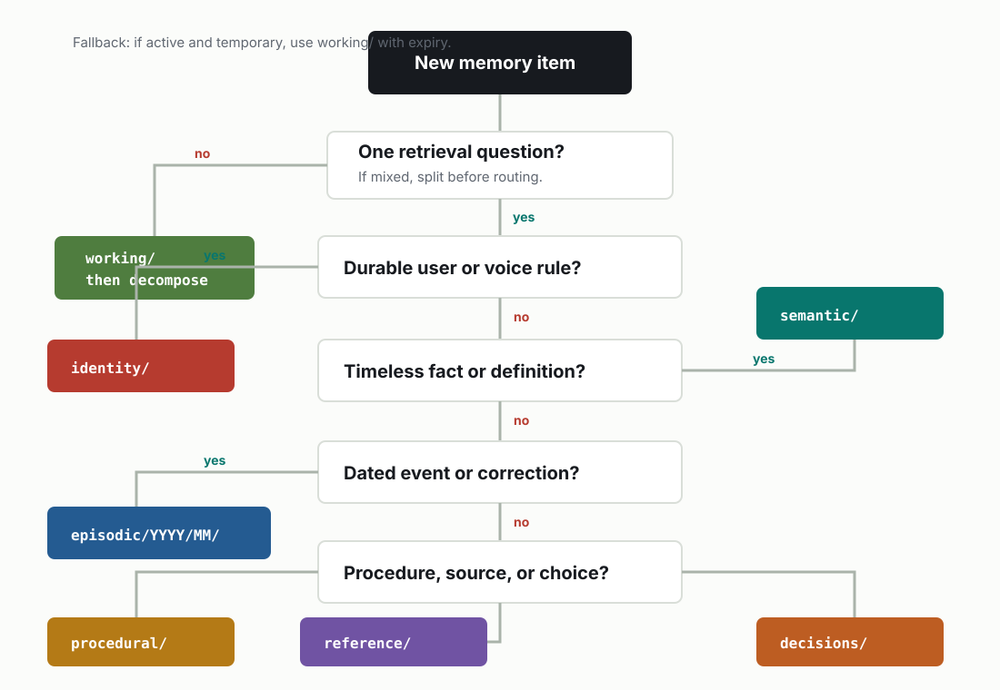

PROTOCOL.md
Routing protocol
Route by future retrieval question. When a note contains more than one retrieval question, split it instead of forcing it into one folder.
Decision tree
- Is it durable information about the user or response style? Use identity/.
- Is it a timeless fact or definition? Use semantic/.
- Is it something that happened on a date? Use episodic/YYYY/MM/.
- Is it a repeatable way to do work? Use procedural/.
- Is it a pointer to source material? Use reference/.
- Is it active and temporary? Use working/.
- Is it an accepted architectural choice? Use decisions/.

Trigger reference
Layer trigger table
| # | Layer | Triggers | Retrieval question |
|---|---|---|---|
| 1 | Identity | Stable identity, communication preferences, boundaries, durable voice rules. | Who is this person, and what durable preferences shape the response? |
| 2 | Semantic | Definitions, durable facts, concept summaries, stable rules, vocabulary. | What is true independent of a specific date or workflow? |
| 3 | Episodic | Meetings, observations, incidents, corrections, dated decisions before ADRs. | What happened, when, and what evidence proves it? |
| 4 | Procedural | Runbooks, checklists, repeatable workflows, command sequences, playbooks. | How should the system or operator perform this task? |
| 5 | Reference | External docs, manuals, source links, schemas, papers, repositories, long documents. | Where should someone look for authoritative source material? |
| 6 | Working | Active tasks, hypotheses, temporary notes, scratch state, open loops. | What is active right now and likely to change soon? |
| 7 | Decisions | Architecture decisions, policy choices, trade-offs, reversals, accepted constraints. | What choice was made, why, and what does it supersede? |